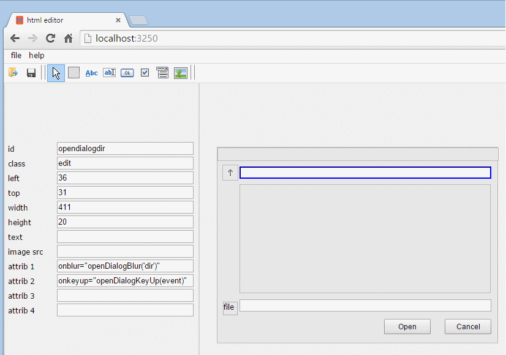

introduction
The "html window editor" is a lay-out tool for designing HTML pages and windows.
The generated HTML output has absolute positioned elements.
With this approach, windows with a fixed lay-out can be embedded in your application.
An example are the file open and file save windows, used in this program. The source file for this is dialoghtml.src.
This application is build with HTML, CSS and JavaScript. Because writing to files is not supported in standard browsers, a Node.js server is used for file i/o.
In the editor, the following elements can be selected, placed an resized:
| box |
A box is a HTML DIV element. It forms the base element where other elements, including the box element, can be placed upon. |
| label |
A label is also a HTML DIV element. It is intended for displaying text. It is not possible to add child elements. |
| input field |
HTML INPUT element with type="text". |
| button |
HTML INPUT element with type="button". |
| checkbox |
HTML INPUT element with type="checkbox". |
| select element |
A HTML SELECT element. Select <OPTION> elements must be added with user defined JavaScript. |
| image element |
A HTML IMG element. |
The output of the editor is a HTML file. Elements have an id and class attribute. A style attribute defines position and size.
Up to four additional attributes can be defined.
installation and starting
Node.js must be installed on your machine. See https://nodejs.org/ for details. Unzip the install file in a directory of your choice.
Start the node.js server in a command window by typing "node server".
To start the application, enter the address "localhost:3250" in your browser.
using

In the top of the screen you will find the menu bar. The file menu has selections for 'new', 'open', 'save' and 'html output'.
Below that is a tool bar for choosing the html element to be placed.
Start with placing a base box for containing your elements. Then, add elements, such as box, label and input fields.
A selected element is marked with a blue outline. Selected elements can be moved and resized.
The left pane shows the properties of the selected element, in this case an input element for a directory name.
As an example, the output HTML for the selected element in the image is:
<input type="text" id="opendialogdir" class="edit" style="left:36px;top:31px;width:411px;height:20px"
onblur="openDialogBlur('dir')" onkeyup="openDialogKeyUp(event)" value="">
When completed, save your file and generate an output HTML file with the "html output" function in the file menu.
The output can be embedded as HTML in your application.
Please note that a CSS definition "position:absolute" is required for all elements.